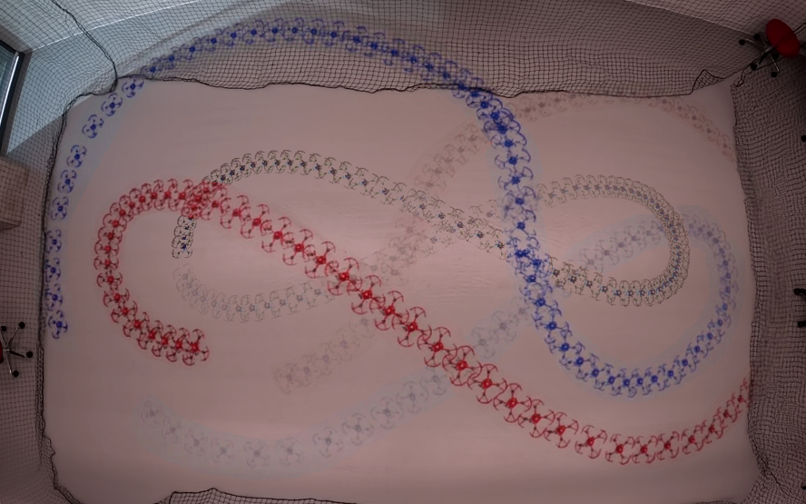

Abstract
We present a way for a group of drones to fly in a 3D leader-follower formation while making sure the follower's camera always sees the leader. This matters in places without GPS, where the follower has to rely on its onboard camera to figure out where the leader is. The hard part is that the camera only sees a narrow region in front of it, and a sharp turn or a wide formation command can easily push the leader out of view.
Our approach has two pieces. First, a formation controller tells the follower how to move based only on what it can sense locally about the leader. Second, a safety filter sits on top of that controller and slightly adjusts the commanded velocities whenever they would push the leader outside the camera's view. The filter steps in only when needed, so normal flight stays unaffected.
We tested this in Gazebo simulations and on real Crazyflie drones. In both cases, the follower keeps the leader inside its camera view at all times — even during aggressive maneuvers and even when the desired formation directly conflicts with what the camera can see.
The Problem

The follower tracks the leader using its onboard camera. The pink region shows what the camera can actually see — a cone limited by the camera's viewing angles and depth range.
When drones fly together indoors or in other GPS-denied places, the follower has to figure out where the leader is using its onboard camera. That works fine — until the leader drifts out of view. Once that happens, the follower loses its only source of information about the leader and the formation breaks down.
The trouble is that the goals can fight each other. The formation might call for the follower to spread out wide for better coverage, but spreading out can push the leader past the edge of the camera frame. So we need a controller that not only tracks the desired formation but also keeps the leader inside the camera's view at all times, using only what the follower can measure locally.
Key Contributions
3D Line-of-Sight Model
A new way of describing the leader's position relative to the follower's camera using distance, two angles, and a heading — a natural fit for what a camera actually sees.
Distributed Controller
Each follower computes its own commands from local information only. No central coordinator needed, so the system scales naturally to more drones.
Real-Time Safety Filter
A lightweight CBF-QP filter that only kicks in when needed. It nudges the commands just enough to keep the leader visible, then steps back out of the way.
How It Works

The full pipeline: a formation planner picks the desired shape, a nominal controller turns that into velocity commands, a safety filter adjusts those commands to keep the leader visible, and finally a low-level velocity controller flies the drone.
Our approach has three building blocks that work together. The first describes what the follower sees, the second computes how the follower should move, and the third protects visibility when the two collide.
Describe the world from the camera's point of view
Instead of tracking the leader using raw x, y, z coordinates, we describe its position the way a camera naturally sees it: how far away it is, how far left or right it appears, how far up or down it appears, and which way it's facing. This makes the camera's field-of-view limits easy to express and easy to enforce later.
Compute the nominal formation command
Given a desired formation (e.g., "stay 1.5 m behind and slightly above the leader"), the follower computes the velocity it needs to close the gap between where it is and where it should be. The math gives an exponentially stable tracker — meaning the formation error shrinks quickly and predictably whenever the camera isn't being pushed to its limits.
Filter the command for safety
Before the velocity command goes to the motors, it passes through a safety filter built from Control Barrier Functions. The filter solves a tiny optimization problem at every timestep that asks: "What's the closest command to the one I wanted that still keeps the leader inside the camera frustum?" When the formation is feasible, the filter does nothing. When the formation conflicts with visibility, the filter quietly bends the command just enough to preserve the view — and lets the formation recover as soon as the conflict passes.
Experiments
We tested our method both in simulation and on real hardware. In every test, two followers fly the same trajectory side by side: one runs our full method (CBF), the other uses only the formation controller without the safety filter (NoCBF). This lets us see exactly what the safety filter is doing.
To stress-test the safety filter, each scenario follows a three-stage task:
- Stage 1 — Normal: the formation is comfortable and the camera has no trouble seeing the leader.
- Stage 2 — Conflict: the desired formation widens or shifts, pushing the leader toward the edge of the camera view.
- Stage 3 — Recovery: the conflict goes away and the followers should return to the nominal formation smoothly.
Gazebo Simulation

One leader (green) and two followers navigating a cave in Gazebo.
Using the CrazySim framework, the team flies through a tight cave environment. Open chambers naturally invite the formation to spread out — which is exactly when visibility conflicts arise — while narrow corridors force quick braking maneuvers.
Three-Stage Task: formation widens in the open chamber.
Abrupt Leader Motion: leader brakes hard in a corridor.
In the three-stage task, expanding the formation drags the leader toward the edge of the camera frame. Our safety filter steps in for just long enough to keep the leader inside the view, then steps back out — the baseline without the filter loses sight of the leader entirely. The same thing happens during the sudden braking maneuver: the filter prevents the follower from overshooting and losing track.
Crazyflie Hardware Experiment

Top-down view of the leader and follower trajectories during real flight.
We then flew the same protocol on real Crazyflie 2.1 quadrotors. To really push the system, the leader tracks a fast figure-eight (lemniscate) trajectory while rotating its yaw. This adds all the messy real-world effects — aerodynamic drag, communication delay, actuator noise — that simulation can't fully capture. A motion-capture system stands in for the camera so we can isolate the performance of the controller and safety filter.
Hardware flight video.

Quantitative results: the CBF follower (blue) stays inside the safe region; the baseline (red) does not.
The story holds up on hardware. When the desired formation conflicts with what the camera can see, our follower quietly adjusts its velocity commands and keeps the leader in view the entire time. The baseline follower — same controller, no safety filter — drifts into the unsafe region and loses sight of the leader. As soon as the conflict ends, our follower returns smoothly to its desired formation.
Takeaways
Visibility is guaranteed
The leader stays inside the camera frustum at every moment, even during aggressive maneuvers.
Tracking still works
When there's no visibility conflict, the safety filter does nothing and the formation tracks normally.
Runs in real time
The safety filter is a small quadratic program that solves fast enough to fly on hardware as light as a Crazyflie.
What's next? In our experiments we used a motion-capture system as a stand-in for the camera so we could isolate the controller and safety filter. The natural next step is to close the loop with a real onboard camera and see how the system handles noisy, image-based measurements.
BibTeX
@article{santjoko2026perceptionaware3dlff,
author = {Santjoko, Immanuel R. and Suganda, Richie R. and Hu, Bin},
title = {Distributed 3D Leader--Follower Formation Control with
Field-of-View Safety via Control Barrier Functions},
journal = {Under Review},
year = {2026},
}